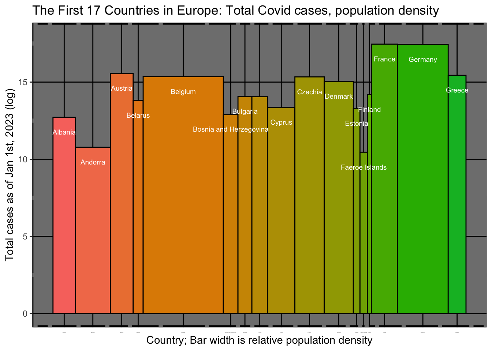
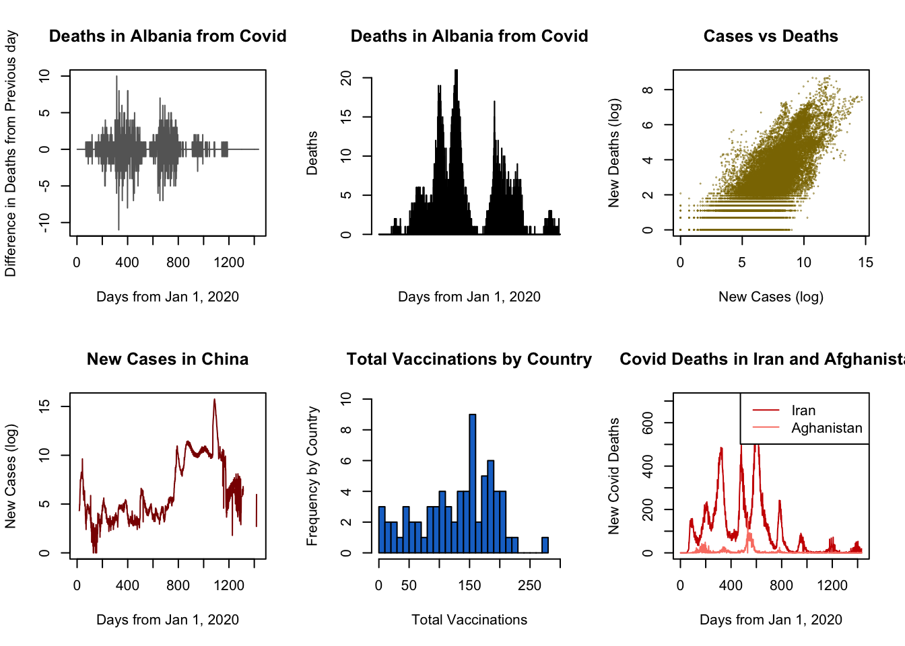
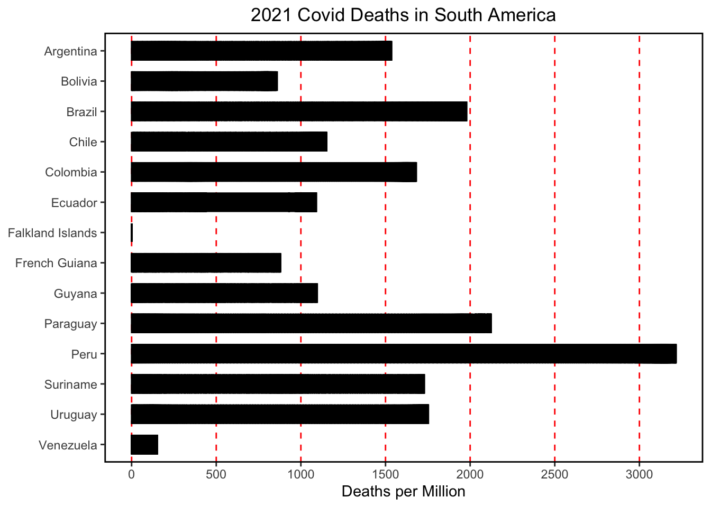
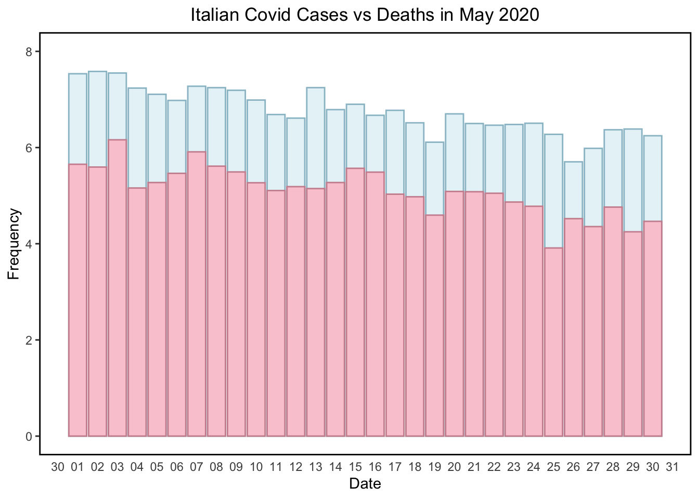

library(ggplot2)
knitr::opts_chunk$set(echo = TRUE)EPPS 6356 Assignment 4
Chart 1: Variable Width Column Chart
owidall = read.csv("http://github.com/owid/covid-19-data/blob/master/public/data/owid-covid-data.csv?raw=true")
owidall = owidall[!grepl("^OWID", owidall$iso_code), ]
owideu = subset(owidall, continent=="Europe")
owidnewyear = subset(owidall, date == "2023-01-01")
owidnewyear2 = subset(owidnewyear, continent ==
"Europe")
owidnewyear2 = subset(owidnewyear2, location !=
"Gibraltar")#plot(x = owidnewyear$population_density,y = owidnewyear$total_cases)
w = owidnewyear2$population_density
pos <- 0.5 * (cumsum(w) + cumsum(c(0, w[-length(w)])))
ggplot(data = owidnewyear2,
aes(x = pos,
y = log(total_cases),
width = w,
fill = location)
) +
geom_col(aes(x = pos,
y = log(total_cases),
width = w,
fill = location),
color = "black"
) +
geom_text(aes(label = location ), vjust = 5, size = 2.5,
nudge_x = 0.5, nudge_y = 0.5,
check_overlap = T,
color = "white") +
theme(legend.position="none",
axis.ticks.x=element_blank(),
axis.text.x=element_text(size=1),
panel.background = element_rect(fill = 'grey50', color = 'black', size = 2),
panel.grid.major = element_line(color = 'black'),
panel.grid.minor = element_line(color = 'grey50', size = 2)
) +
scale_x_continuous(labels = owidnewyear2$location, breaks = pos) +
labs(
title = "The First 17 Countries in Europe: Total Covid cases, population density",
x = "Country; Bar width is relative population density",
y = "Total cases as of Jan 1st, 2023 (log)"
)
Chart 2: Table with Embedded Charts
par(mfrow=c(2, 3) )
plot(
diff(ts(
subset(owidall, location == "Albania")$new_deaths )
),
main = "Deaths in Albania from Covid",
col = "grey40",
xlab = "Days from Jan 1, 2020",
ylab = "Difference in Deaths from Previous day"
)
barplot(
owideu[1:1000,9],
col = "darksalmon",
main = "Deaths in Albania from Covid",
xlab = "Days from Jan 1, 2020",
ylab = "Deaths"
)
plot(
x = log(owideu$new_cases),
y = log(owideu$new_deaths),
font = 1, pch = 20, cex = 0.1,
col = "gold4",
main = "Cases vs Deaths",
xlab = "New Cases (log)",
ylab = "New Deaths (log)"
)
plot(
ts(
(log(
subset(owidall, location == "China")$new_cases )
) ),
col = "red4",
main = "New Cases in China",
xlab = "Days from Jan 1, 2020",
ylab = "New Cases (log)"
)
hist(
subset(owidall, date == "2022-01-01")$total_vaccinations_per_hundred,
breaks = 30,
xlim = c(0,300),
ylim = c(0, 10),
col = "dodgerblue3",
main = "Total Vaccinations by Country",
xlab = "Total Vaccinations",
ylab = "Frequency by Country"
)
plot(
ts(
subset(owidall, location == "Iran")$new_deaths),
lty="solid", col = "red3",
main = "Covid Deaths in Iran and Afghanistan",
xlab = "Days from Jan 1, 2020",
ylab = "New Covid Deaths"
)
lines(subset(owidall, location == "Afghanistan")$new_deaths,
lty="solid", col = "salmon")
legend(x = "topright", legend = c("Iran","Aghanistan"), col = c("red3","salmon"),
lty = 1
)
3. Bar Chart
## Download COVID data from OWID GitHub
# Deselect cases/rows with OWID
## owidall1 = owidall[!grepl("^OWID", owidall$iso_code), ]
south1 = subset(owidall, continent=="South America")
start_date <- as.Date("2021-01-01")
end_date <- as.Date("2021-12-31")
south = subset(south1, date >= start_date & date <= end_date)
south$location <- factor(south$location,levels=rev(unique(south$location)))
base <- ggplot(south) + geom_col(aes(new_deaths_per_million, location), fill = "black", col="black", width = 0.6)
base + labs(title = "2021 Covid Deaths in South America", x = "Deaths per Million", y = NULL) + scale_x_continuous(breaks = seq(0, 3000, by = 500)) + theme(
panel.background = element_rect(fill = "white"),
panel.border = element_rect(color = "black", linewidth = 1, fill = NA),
plot.background = element_rect(fill = "white"),
panel.grid.major.x = element_line(color = "red",
size = 0.5,
linetype = 2),
plot.title = element_text(hjust = 0.5))
4. Column Chart
##owidall1 = owidall[!grepl("^OWID", owidall$iso_code), ]
# Subset by country: Italy
italy = subset(owidall, location=="Italy")
start_date <- as.Date("2020-05-01")
end_date <- as.Date("2020-5-30")
italy = subset(italy, date >= start_date & date <= end_date)
base <- ggplot(data= (italy), aes(x=as.Date(date))) +
geom_bar(aes(y=log(new_cases)), stat="identity", position ="identity", alpha=.3, fill='lightblue', color='lightblue3') +
geom_bar(aes(y=log(new_deaths)), stat="identity", position="identity", alpha=.8, fill='pink', color='pink3') + xlim(start_date, end_date) + ylim(0,8) +
scale_color_manual(values = c("New cases" = "lightblue", "New deaths" = "pink"), name = "Legend")
base + scale_x_date(date_labels = "%d", date_break = "1 day") +
theme(panel.background = element_rect(fill = "white"),
panel.border = element_rect(color = "black", linewidth = 1, fill = NA),
plot.background = element_rect(fill = "white"),
axis.ticks.x=element_blank(), plot.title = element_text(hjust = 0.5),
legend.position="bottom") +
labs(title = "Italian Covid Cases vs Deaths in May 2020", y = "Frequency", x = "Date", colour = "Legend")